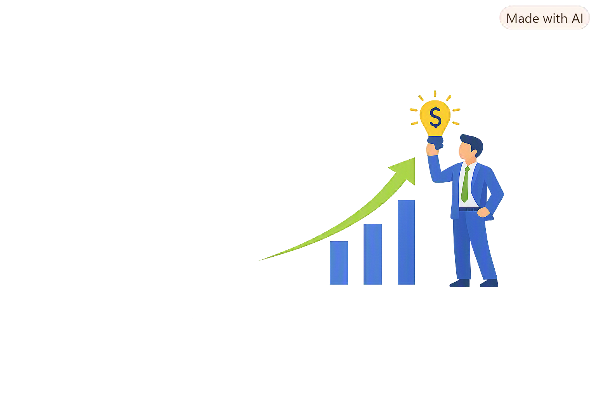

<section class="blog-section">
  <div class="blog-container">
    <!-- ENCABEZADO DE LA SECCIÓN -->
    <div class="blog-header">
      <div class="header-text">
        <span class="section-subtitle">INFOFIN</span>
        <h2 class="section-title">Nuestras últimas publicaciones</h2>
        <p class="section-description">
          Noticias, análisis financiero y estrategias clave para impulsar el crecimiento de tu
          empresa.
        </p>
      </div>

      <!-- BOTÓN PREPARADO PARA LA FUTURA AUTENTICACIÓN / CREACIÓN DE POSTS
      <div class="admin-action">
        <ion-button fill="outline" color="primary" class="add-post-btn" disabled="true">
          <ion-icon name="add-outline" slot="start"></ion-icon>
          Nueva publicación
        </ion-button>
      </div> -->
    </div>

    <!-- GRID DE TARJETAS DE BLOG -->
    <div class="blog-grid">
      <!-- Post 1 -->
      <article class="blog-card">
        <div class="card-image">
          
          <span class="category-badge">Arrendamiento</span>
        </div>
        <div class="card-content">
          <span class="post-date">04 Sep, 2026</span>
          <h3 class="post-title">Ventajas del arrendamiento puro para la deducción fiscal</h3>
          <p class="post-excerpt">
            Descubre cómo optimizar la carga tributaria de tu empresa adquiriendo activos sin
            descapitalizarte.
          </p>
          <a href="#" class="read-more" (click)="$event.preventDefault()">
            Leer más <ion-icon name="arrow-forward-outline"></ion-icon>
          </a>
        </div>
      </article>

      <!-- Post 2 -->
      <article class="blog-card">
        <div class="card-image">
          
          <span class="category-badge">Factoraje</span>
        </div>
        <div class="card-content">
          <span class="post-date">28 Ago, 2026</span>
          <h3 class="post-title">Cómo mantener un flujo de efectivo saludable en 2026</h3>
          <p class="post-excerpt">
            El factoraje financiero se ha convertido en la herramienta clave para convertir cuentas
            por cobrar en liquidez inmediata.
          </p>
          <a href="#" class="read-more" (click)="$event.preventDefault()">
            Leer más <ion-icon name="arrow-forward-outline"></ion-icon>
          </a>
        </div>
      </article>

      <!-- Post 3 -->
      <article class="blog-card">
        <div class="card-image">
          
          <span class="category-badge">Estrategia</span>
        </div>
        <div class="card-content">
          <span class="post-date">15 Ago, 2026</span>
          <h3 class="post-title">Sale & Lease Back: Reinvierte en el núcleo de tu negocio</h3>
          <p class="post-excerpt">
            Recupera el capital atado a tus activos operativos mientras continúas utilizándolos sin
            interrupciones.
          </p>
          <a href="#" class="read-more" (click)="$event.preventDefault()">
            Leer más <ion-icon name="arrow-forward-outline"></ion-icon>
          </a>
        </div>
      </article>
    </div>
  </div>
</section>
